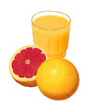

Грейпфрутовый сок, ингибируя изоэнзим CYP3A4 кишечной стенки, оказывает выраженное влияние на метаболизм ряда лекарств, что необходимо учитывать при назначении препаратов, концентрация которых в плазме крови требует тщательного контроля. В сообщении представлена основная информация о механизмах ингибирующего эффекта грейпфрутового сока, длительности и характере действия, приведён список основных лекарственных препаратов, на метаболизм которых он влияет.

Как показали данные проведённых за последнее десятилетие исследований, грейпфрутовый сок способен в значительной степени влиять на фармакокинетику ряда лекарственных препаратов.
Подобный эффект связан со способностью грейпфрутов ингибировать активность цитохрома Р450 изоэнзима CYP3A4, который включён в метаболизм почти половины всех назначаемых лекарственных препаратов. Было показано, что воздействию подвергается преимущественно изоэнзим кишечной стенки, хотя многократный приём (3 раза в день) больших количеств сока (200-240 мл) в течение нескольких дней может также приводить к ингибированию печёночного изоэнзима. Способность грейпфрутового сока ингибировать CYP3A4 обусловлена содержащимися в нём фуранокумаринами бергамоттином и 6'7'-дигидроксибергамоттином, возможно также участие других компонентов. Грейпфрутовый сок, по-видимому, не оказывает выраженного воздействия на Р-гликопротеин, участвующий в выведении лекарств из организма, но ингибирует транспортирующий органические анионы полипептид, способствующий абсорбции ряда препаратов.
Поскольку ингибирующий эффект грейпфрутового сока частично необратим, после полной эвакуации сока из кишечника активность фермента восстанавливается не сразу. Хотя восстановление половинной активности CYP3A4 после приёма 1 стакана грейпфрутового сока достигается по прошествии одного дня, слабый ингибирующий эффект сохраняется ещё в течение 3 дней. Таким образом, нельзя избежать взаимодействия сока с лекарственными препаратами путём приёма в различное время.
Выраженность взаимодействия с лекарствами в значительной степени зависит от количества выпитого сока. Так, ежедневное употребление 1 стакана в течение 3 дней приводило к удвоению плазменной концентрации ловастатина, а ежедневное употребление 3 стаканов концентрированного сока в течение 3 дней приводило к 15-кратному увеличению плазменной концентрации ловастатина и симвастатина.
Способность ингибировать CYP3A4 может варьировать в зависимости от цвета грейпфрутов (белый или розовый), когда и где они были собраны, а также от того, были ли употреблены в пищу целые фрукты, свежий или замороженный сок. Хотя в большинстве исследований воздействия грейпфрутов на метаболизм лекарственных препаратов использовался замороженный сок, свежие грейпфруты и ряд других цитрусовых также содержат ингибиторы CYP3A4.
Севильские (кислые) апельсины, как и грейпфрут, содержат бергамоттин и 6'7'-дигидроксибергамоттин, и могут взаимодействовать с препаратами, метаболизируемыми CYP3A4. Помело, разновидность грейпфрута, произрастающая в Индии и других азиатских странах, обладает аналогичным эффектом. Апельсины, мандарины и лимоны и полученные из них соки не обладают выраженным ингибирующим эффектом на CYP3A4.
В таблице представлены основные препараты, на метаболизм которых оказывает влияние употребление грейпфрутового сока, а также характер воздействия.
| Препарат | Эффект | Комментарии |
|---|
| Альбендазол | Возможное усиление действия | |
| Амиодарон | Возможная токсичность | Избегать совместного использования |
| Бензодиазепины | Усиление действия триазолама, перорального мидазолама; теоретически альпразолама, диазепама | Избегать совместного использования |
| Будесонид | Возможная токсичность | Удвоение системного эффекта |
| Бушпирон | Возможная токсичность | Избегать совместного использования |
| Кармабазепин | Возможная токсичность | Мониторирование концентрации |
| Циклоспорин | Возможная токсичность | Мониторирование концентрации |
| Декстрометорфан | Повышенный риск токсичности | Умеренный эффект |
| Дилтиазем | Возможная токсичность | Умеренный эффект |
| Эритромицин | Возможное повышение токсичности | Умеренный эффект |
| Эстрогены | Усиление действия этинил эстрадиола и 17β-эстрадиола | |
| Этопосид | Возможное ослабление действия | Избегать совместного использования |
| Фелодипин | Возможная токсичность | Усиление эффекта при увеличении дозы; взаимодействие с амлодипином минимально |
| Фексофенадин | Возможное ослабление действия | Важно; яблочный и апельсиновый сок производят аналогичный эффект |
| Флуоксетин | Возможно развитие серотонинового синдрома | Зафиксирован один случай, пациент получал также тразодон, который мог принимать участие во взаимодействиях |
| Флувоксамин | Возможное увеличение токсичности | Данные получены в исследованиях на здоровых добровольцах |
| Ингибиторы ГМГ-КоА редуктазы | Возможное повышение токсичности ловастатина, симвастатина или (менее вероятно) атровастатина | Действие может длиться более 24 ч; с правастатином, флувастатином и розувастином, как правило, не взаимодействует |
| Индинавир | Возможное ослабление действия | Данные противоречивы, клиническое значение не установлено |
| Итраконазол | Возможное ослабление действия | Избегать совместного использования |
| Ловастатин | см. ингибиторы ГМГ-КоА редуктазы | |
| Метилпреднизолон | Возможное ослабление действия | Важно |
| Никардипин | Возможное увеличение токсичности | Не значительные изменения гемодинамического эффекта |
| Нифедипин | Повышенный риск токсичности | Избегать совместного использования |
| Нимодипин | Возможная токсичность | Избегать совместного использования |
| Нисолдипин | Возможно увеличение токсичности | Избегать совместного использования |
| Празиквантель | Возможная токсичность | Данные получены в исследованиях на здоровых добровольцах |
| Квинидин | Возможная токсичность | Умеренный эффект |
| Саквинавир | Увеличение биодоступности | Умеренный эффект, клиническое значение не известно |
| Серталин | Возможная токсичность | Клиническое значение не ясно |
| Силденафил | Возможная токсичность силденафила; варденафил и тадалафил также могут взаимодействовать | Избегать совместного использования |
| Симвастатин | см. ингибиторы ГМГ-КоА редуктазы | |
| Сиролимус | Возможная токсичность | Избегать совместного использования |
| Такролимус | Возможная токсичность | Зафиксирован случай резкого повышения концентрации после употребления в пищу 1 грейпфрута; избегать совместного использования |
| Теофиллин | Возможное ослабление действия | Умеренный эффект |
| Верапамил | Возможное повышение токсичности | Умеренное повышение концентрации верапамила в плазме крови |
| Варфарин | Возможное усиление антикоагулянтного эффекта | Зафиксирован один случай (1999 г.); в предыдущем исследовании на 10 пациентах эффект не выявлялся |
Пациенты, принимающие препараты, плазменные концентрации которых требуют тщательного контроля, такие как амиодарон, карбамазепин, циклоспорин, сиролимус или такролимус, должны избегать употребления в пищу грейпфрутов, кислых апельсинов, а также полученных из них соков. Для большинства препаратов, метаболизируемых CYP3A4, приём 1 стакана сока или половины грейпфрута в день следует считать безопасным.
Drug interactions with grapefrut juice.
The Medical Letter 2004; 46 (1173): 2-4.
См. также: Грейпфрутовый сок и метаболизм лекарств